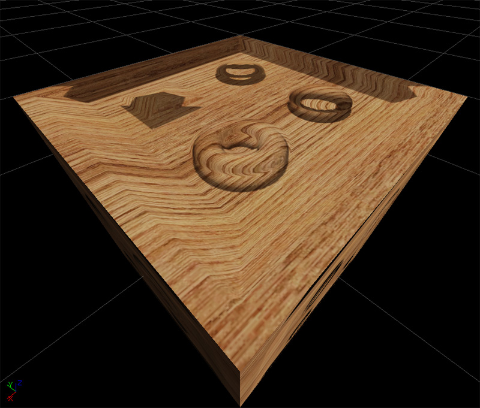
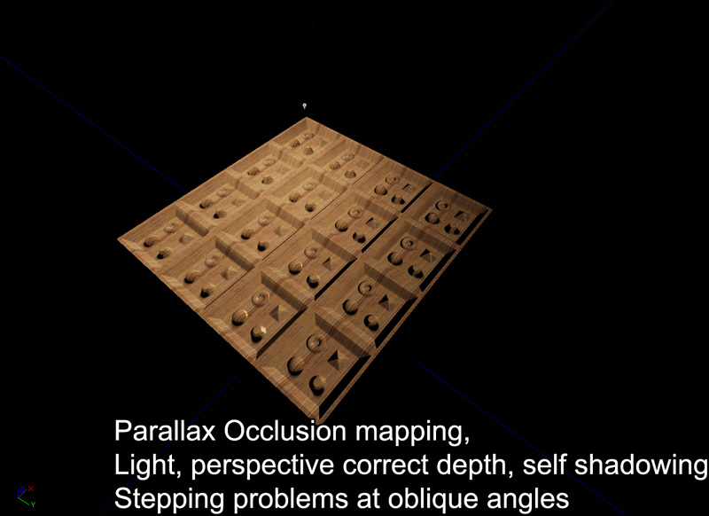
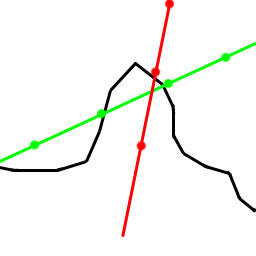
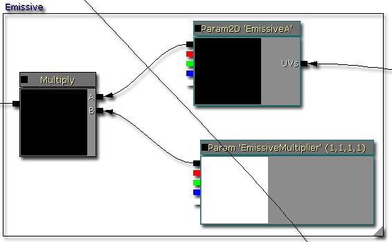
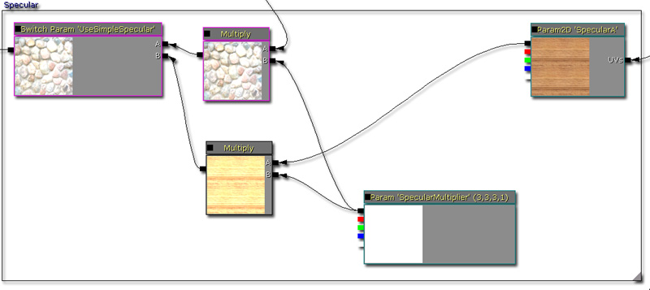
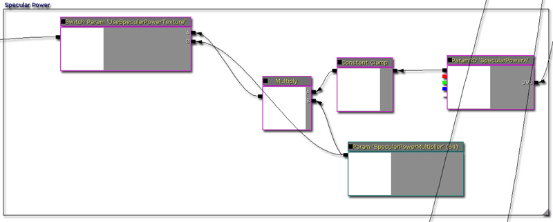
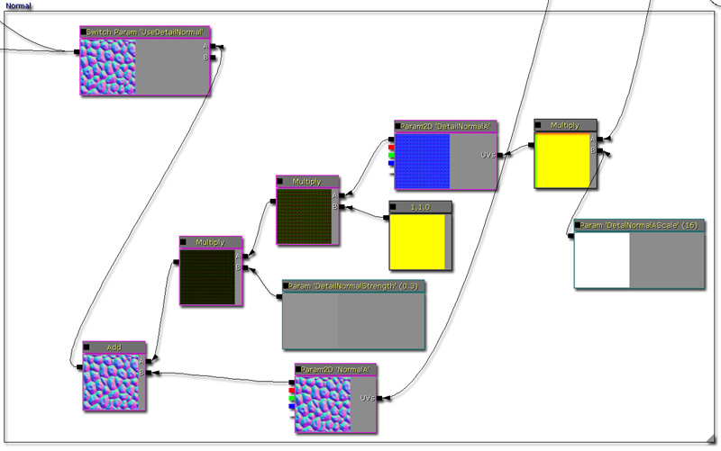
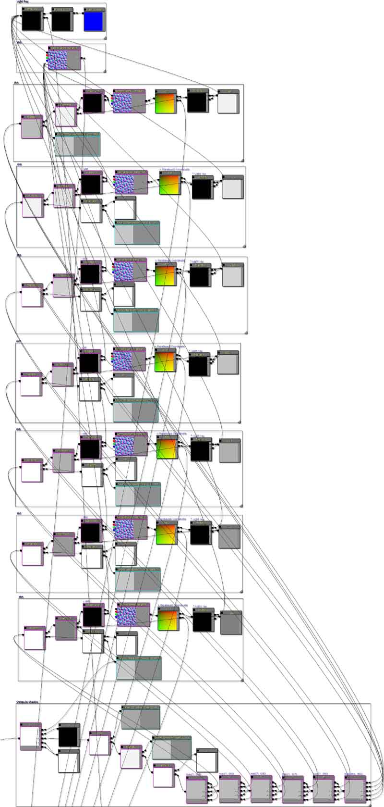
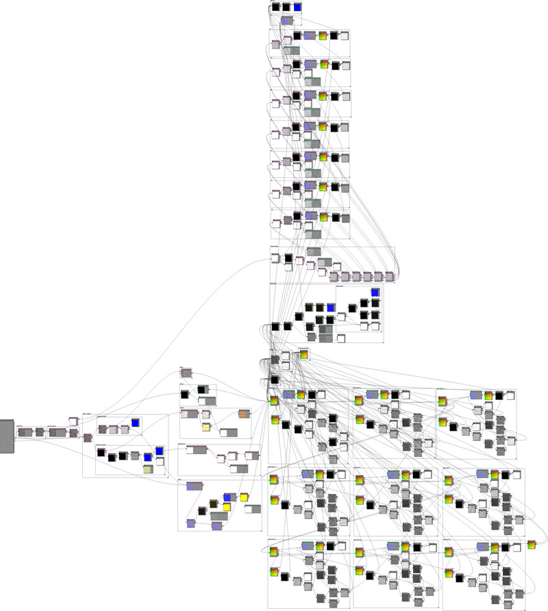
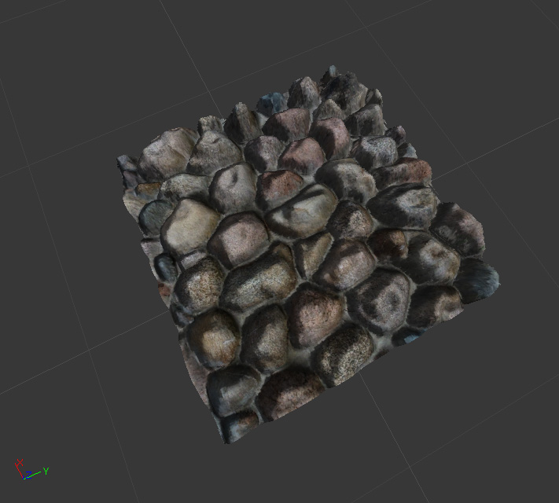

UDN
Search public documentation:
DevelopmentKitGemsParallaxOccludedMappingCH
English Translation
日本語訳
한국어
Interested in the Unreal Engine?
Visit the Unreal Technology site.
Looking for jobs and company info?
Check out the Epic games site.
Questions about support via UDN?
Contact the UDN Staff
日本語訳
한국어
Interested in the Unreal Engine?
Visit the Unreal Technology site.
Looking for jobs and company info?
Check out the Epic games site.
Questions about support via UDN?
Contact the UDN Staff
视差角度遮挡贴图
最后一次测试是在2011年3月份的UDK版本上进行的。
可以与 PC 兼容
概述
视差角度遮挡贴图是一个可以使用光线跟踪中的概念产生视觉上移位的纹理的渲染方法。最终结果是诸如石头墙壁这样的纹理外观可以使墙壁和地板感觉没那么平坦的深度效果。这篇精华文章将不会再深入研究这个技术的工作原理，因为在网络上可以找到很多相关信息。
不同虚拟深度方法之间的比较
法线贴图
法线贴图是一个可以通过光照实现关卡深度的标准方法。就其本性而言，我们的眼睛通过光照和阴影感知体积。顶部亮的部分和底部暗的部分在正常情况下都被看作是从屏幕中伸出的，反面则伸入屏幕。然而，法线贴图实际上不会以任何方式变换纹理坐标，这样在深入进行分析后，它们看上去会是平坦的。此外，现在使用法线贴图性能消耗非常少，所以对性能的影响不大。
凹凸偏移贴图
凹凸偏移贴图（视差贴图）根据相机的视向更改纹理坐标添加深度。通过移位漫反射、法线和高光的 UV 贴图，可以感知到一个失真的深度。凹凸偏移只会添加一些指令，因此，使用它消耗的性能相当少。 凹凸偏移贴图的主要问题是它常常会使像素在较高的高度偏移时出现游离现象，一般情况下视觉效果不正确。
凹凸偏移贴图的主要问题是它常常会使像素在较高的高度偏移时出现游离现象，一般情况下视觉效果不正确。

视差遮蔽贴图
视差遮蔽贴图可以通过光线跟踪添加深度，根据相机的视向找到正确的纹理坐标。它可以为材质创建一个透视真正正确的深度。遮蔽部分同时还意味着高度贴图的部分可以遮蔽其他会帮助增加深度的部分。最后，通过自阴影为材质手动添加更多深度。然而，视差遮蔽贴图性能消耗非常大，通常情况下不应该随便使用。
视差遮蔽贴图的主要问题是在倾斜角处光线跟踪通常不够精确以至于无法检索到正确的高度贴图。正如您在下面的图片中看到的那样，在倾斜角的地方光线跟踪很容易错过正确的深度或者找到错误的深度。通过增加深度渲染的数量或者降低高度比例可以解决这个问题。高度比例高也会引发同样的问题。
这是一个在倾斜角的地方看到的视差遮蔽材质的屏幕截图。注意，步进‘非常平’的问题。
材质构建
材质的尺寸一定，让我们分别看一下各个部分。
计算视差偏移
视差偏移是逐步进行高度贴图时使用的向量，找到相应的深度。可以通过查找相机向量（已经在切线空间中）的长度平方进行计算。然后用相机向量的 z 值的平方减去这个值。然后对相机向量的 z 值进行平方根运算。然后乘以相机向量的 x 和 y 值，可以生成具有 x 和 y 两部分的 Vector。最后，乘以高度比例系数，然后返回 x 和 y 分量。
深度渲染单位
每个深度渲染单位都会将视差偏移乘以一个预设的步进大小。默认情况下，材质具有九个深度渲染的最大值，因此步进大小是 0.1f （1 /（1 + 深度渲染））。通过这种方法计算深度，然后检查从高度贴图中检索到的高度。如果这个高度大于计算的深度，那么会渲染视差纹理坐标。如果这个高度小于计算的高度，那么会进入到下一个深度渲染。每个深度渲染可以一个一个地增加步进，这样它就会越来越深地投射到高度贴图中。可以增加深度渲染的数量来提高深度搜索的质量；但是材质由性能和指令数范围决定。在所有深度渲染末尾都会返回一个视差纹理坐标。
计算漫反射
这个漫反射可以通过对漫反射纹理参数取样进行计算。
计算自发光
通过对自发光纹理参数进行采样计算自发光，然后乘以一个向量参数。它允许您调整自发光的着色方式及其亮度。
计算高光
高光可以使用两种方法进行计算。它允许您通过设置静态开关上的值确定要使用哪一种方法。- 它可以通过将漫反射与一个向量参数相乘进行计算，它在没有提供高光纹理的情况下有效。
- 可以通过将一个高光纹理样本与一个向量参数相乘进行计算，这种方法在您希望有更多指定高光的情况下有效。

计算高光强度
高光强度可以使用两种方法进行计算。它允许您通过设置静态开关的值确定要使用哪一种方法。- 可以通过将一个高光强度纹理样本与一个向量参数相乘进行计算。
- 它会返回一个向量参数。

计算法线
可以通过也可以不通过细分法线计算法线。它可以允许您确定您是否需要或希望使用细分法线。您还可以更改细分法线的比例和深度。因为反射向量需要法线信息，所以会将这个法线的结果连接到材质的 Normal 输入中。
计算阴影
阴影可以通过倒置从初始深度渲染中找到的深度开始的光线跟踪进行计算。因为光线向上递增，所以采样高度贴图，然后通过每个跟踪段计算阴影值。在计算所有阴影段后，计算最终值。
添加漫反射和高光
在手动计算阴影的时候，材质需要使用它自己自定义光照解决方案并且使用虚幻的默认计算。默认情况下，材质将会使用 phong 着色，这样它就可以类似于游戏中的每个其他材质。通过首先计算漫反射组件然后计算高光组件并添加结果完成这项操作。
乘以阴影系数
在已经添加漫反射和高光之后，将结果像素与阴影系统相乘使其变暗。可以在这里调整常量限定范围定义阴影的明暗程度或者环境亮度的明暗程度。此外，这里还有一个静态开关，您可以使用它启用或禁用阴影路径。
添加自发光
因为自发光没有受到光照计算影响，所以将其添加在最后面。
最终材质树节点
下面是一个完整的材质树节点的图片。点击查看大视图 (~2.5mb)。

注意
由于材质的尺寸问题，请注意要创建材质实例可能需要一些时间。
深入研究轮廓切割
可以检测视差贴图坐标是在 1.f 以上或者 0.f 以下。如果它们在这个范围内，那么您可以将不透明度设置为 0。这样做可能会造成某种程度的轮廓切割效果，但是并不完美。

示例


下载
- 下载内容和材质。(ParallaxOcclusionMapping.zip)